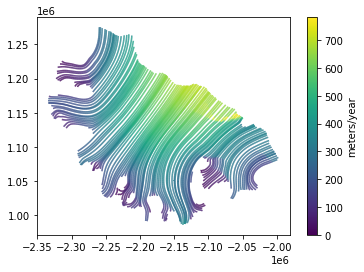
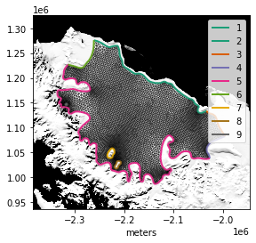
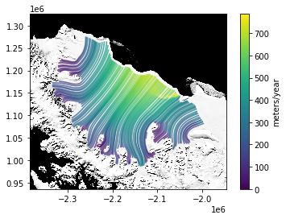
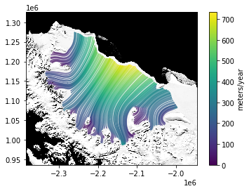
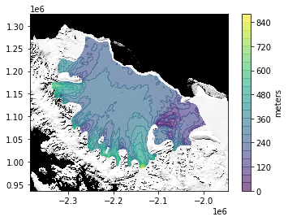
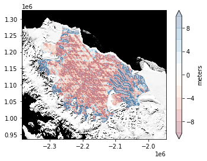

<!DOCTYPE html>
<!--[if IE 8]><html class="no-js lt-ie9" lang="en" > <![endif]-->
<!--[if gt IE 8]><!--> <html class="no-js" lang="en" > <!--<![endif]-->
<head>
  <meta charset="utf-8">
  
  <meta name="viewport" content="width=device-width, initial-scale=1.0">
  
  <title>Larsen Ice Shelf &mdash; icepack 0.0.3 documentation</title>
  

  
  
  
  

  
  <script type="text/javascript" src="_static/js/modernizr.min.js"></script>
  
    
      <script type="text/javascript" id="documentation_options" data-url_root="./" src="_static/documentation_options.js"></script>
        <script type="text/javascript" src="_static/jquery.js"></script>
        <script type="text/javascript" src="_static/underscore.js"></script>
        <script type="text/javascript" src="_static/doctools.js"></script>
        <script type="text/javascript" src="_static/language_data.js"></script>
        <script async="async" type="text/javascript" src="https://cdnjs.cloudflare.com/ajax/libs/mathjax/2.7.5/latest.js?config=TeX-AMS-MML_HTMLorMML"></script>
    
    <script type="text/javascript" src="_static/js/theme.js"></script>

    

  
  <link rel="stylesheet" href="_static/css/theme.css" type="text/css" />
  <link rel="stylesheet" href="_static/pygments.css" type="text/css" />
    <link rel="index" title="Index" href="genindex.html" />
    <link rel="search" title="Search" href="search.html" />
    <link rel="next" title="Synthetic ice stream" href="icepack.demo.03-synthetic-ice-stream.html" />
    <link rel="prev" title="Synthetic ice shelf" href="icepack.demo.01-synthetic-ice-shelf.html" /> 
</head>

<body class="wy-body-for-nav">

   
  <div class="wy-grid-for-nav">
    
    <nav data-toggle="wy-nav-shift" class="wy-nav-side">
      <div class="wy-side-scroll">
        <div class="wy-side-nav-search" >
          

          
            <a href="index.html" class="icon icon-home"> icepack
          

          
          </a>

          
            
            
              <div class="version">
                0.0.3
              </div>
            
          

          
<div role="search">
  <form id="rtd-search-form" class="wy-form" action="search.html" method="get">
    <input type="text" name="q" placeholder="Search docs" />
    <input type="hidden" name="check_keywords" value="yes" />
    <input type="hidden" name="area" value="default" />
  </form>
</div>

          
        </div>

        <div class="wy-menu wy-menu-vertical" data-spy="affix" role="navigation" aria-label="main navigation">
          
            
            
              
            
            
              <p class="caption"><span class="caption-text">Basics</span></p>
<ul>
<li class="toctree-l1"><a class="reference internal" href="overview.html">Overview</a></li>
<li class="toctree-l1"><a class="reference internal" href="background.html">Background</a></li>
<li class="toctree-l1"><a class="reference internal" href="installation.html">Installation</a></li>
<li class="toctree-l1"><a class="reference internal" href="contact.html">Contact</a></li>
</ul>
<p class="caption"><span class="caption-text">Tutorials</span></p>
<ul class="current">
<li class="toctree-l1"><a class="reference internal" href="icepack.demo.00-meshes-functions.html">Meshes, functions</a></li>
<li class="toctree-l1"><a class="reference internal" href="icepack.demo.01-synthetic-ice-shelf.html">Synthetic ice shelf</a></li>
<li class="toctree-l1 current"><a class="current reference internal" href="#">Larsen Ice Shelf</a><ul>
<li class="toctree-l2"><a class="reference internal" href="#geometry">Geometry</a></li>
<li class="toctree-l2"><a class="reference internal" href="#imagery">Imagery</a></li>
<li class="toctree-l2"><a class="reference internal" href="#meshing">Meshing</a></li>
<li class="toctree-l2"><a class="reference internal" href="#input-data">Input data</a></li>
<li class="toctree-l2"><a class="reference internal" href="#modeling">Modeling</a></li>
<li class="toctree-l2"><a class="reference internal" href="#conclusion">Conclusion</a></li>
</ul>
</li>
<li class="toctree-l1"><a class="reference internal" href="icepack.demo.03-synthetic-ice-stream.html">Synthetic ice stream</a></li>
<li class="toctree-l1"><a class="reference internal" href="icepack.demo.04-ice-shelf-inverse.html">Inverse problems</a></li>
<li class="toctree-l1"><a class="reference internal" href="icepack.demo.05-hybrid-ice-stream.html">Ice streams, once more</a></li>
</ul>
<p class="caption"><span class="caption-text">Development</span></p>
<ul>
<li class="toctree-l1"><a class="reference internal" href="contributing.html">Contributing</a></li>
<li class="toctree-l1"><a class="reference internal" href="testing.html">Testing</a></li>
<li class="toctree-l1"><a class="reference internal" href="design.html">Design</a></li>
</ul>
<p class="caption"><span class="caption-text">API Reference</span></p>
<ul>
<li class="toctree-l1"><a class="reference internal" href="modules.html">icepack</a></li>
</ul>

            
          
        </div>
      </div>
    </nav>

    <section data-toggle="wy-nav-shift" class="wy-nav-content-wrap">

      
      <nav class="wy-nav-top" aria-label="top navigation">
        
          <i data-toggle="wy-nav-top" class="fa fa-bars"></i>
          <a href="index.html">icepack</a>
        
      </nav>


      <div class="wy-nav-content">
        
        <div class="rst-content">
        
          


<div role="navigation" aria-label="breadcrumbs navigation">

  <ul class="wy-breadcrumbs">
    
      <li><a href="index.html">Docs</a> &raquo;</li>
        
      <li>Larsen Ice Shelf</li>
    
    
      <li class="wy-breadcrumbs-aside">
        
            
            <a href="_sources/icepack.demo.02-larsen-ice-shelf.rst.txt" rel="nofollow"> View page source</a>
          
        
      </li>
    
  </ul>

  
  <hr/>
</div>
          <div role="main" class="document" itemscope="itemscope" itemtype="http://schema.org/Article">
           <div itemprop="articleBody">
            
  <div class="highlight-ipython3 notranslate"><div class="highlight"><pre><span></span><span class="o">%</span><span class="k">matplotlib</span> inline
<span class="kn">import</span> <span class="nn">os</span>
<span class="kn">import</span> <span class="nn">matplotlib.pyplot</span> <span class="k">as</span> <span class="nn">plt</span>
<span class="kn">import</span> <span class="nn">numpy</span> <span class="k">as</span> <span class="nn">np</span>
<span class="kn">import</span> <span class="nn">rasterio</span>
<span class="kn">import</span> <span class="nn">geojson</span>
<span class="kn">import</span> <span class="nn">firedrake</span>
<span class="kn">import</span> <span class="nn">icepack</span><span class="o">,</span> <span class="nn">icepack.plot</span><span class="o">,</span> <span class="nn">icepack.models</span>
</pre></div>
</div>
<div class="section" id="larsen-ice-shelf">
<h1>Larsen Ice Shelf<a class="headerlink" href="#larsen-ice-shelf" title="Permalink to this headline">¶</a></h1>
<p>This demo will involve using real data for the Larsen Ice Shelf in the
Antarctic Peninsula. The use of real data will mostly change how we set
up the simulation. The simulation itself – involving successive
prognostic and diagnostic solves of the physics model – is virtually
identical to what we saw in the last demo.</p>
<p>To access the data, you’ll need to have a login for
<a class="reference external" href="https://urs.earthdata.nasa.gov/">EarthData</a>, the web portal through
which NASA makes remote sensing data available to the public. Most of
the ice sheet remote sensing data produced by American research
institutions is hosted at the <a class="reference external" href="https://www.nsidc.org">National Snow and Ice Data Center
(NSIDC)</a> and an EarthData login is necessary
to access data from NSIDC.</p>
<p>The external data that we will use are:</p>
<ul class="simple">
<li><p>an ice thickness map from the
<a class="reference external" href="https://www.bas.ac.uk/project/bedmap-2/">bedmap2</a> data set, which
is available from the British Antarctic Survey</p></li>
<li><p>a velocity map of Antarctica produced as part of the MEaSUREs
program, which you can read more about
<a class="reference external" href="https://nsidc.org/data/nsidc-0484">here</a></p></li>
<li><p>a satellite image of all of Antarctica taken from
<a class="reference external" href="https://en.wikipedia.org/wiki/Moderate_Resolution_Imaging_Spectroradiometer">MODIS</a></p></li>
<li><p>an outline of the Larsen C Ice Shelf, which I created by tracing over
this satellite image in a <a class="reference external" href="https://en.wikipedia.org/wiki/Geographic_information_system">geographic information
system</a>.</p></li>
</ul>
<p>Rather than manually download these data sets from the websites they’re
hosted on, we’ll call a few functions in the module <code class="docutils literal notranslate"><span class="pre">data.py</span></code> in this
directory to fetch them for us. (Internally, these functions use a
library called <a class="reference external" href="https://github.com/fatiando/pooch">pooch</a> which
handles things like caching the data so it doesn’t get downloaded twice,
unzipping archived files, and so forth.) One we have these data sets
we’ll use the library
<a class="reference external" href="https://rasterio.readthedocs.io/en/stable/">rasterio</a> to read the
gridded data and
<a class="reference external" href="https://github.com/jazzband/python-geojson">GeoJSON</a> for the vector
data. Pooch, rasterio, and GeoJSON will have been installed along with
icepack, so you don’t need to do this yourself.</p>
<div class="section" id="geometry">
<h2>Geometry<a class="headerlink" href="#geometry" title="Permalink to this headline">¶</a></h2>
<p>First, we’ll fetch a <a class="reference external" href="https://en.wikipedia.org/wiki/GeoJSON">GeoJSON</a>
file describing the outline of the domain. GeoJSON is a common file
format for geospatial vector data. In the previous demo, we generated a
.geo file describing the outline of the domain, and then called gmsh to
create a triangulation of the interior. For this demo, we’ll use a
different helper script that will turn our .geojson file into the .geo
format that gmsh expects.</p>
<p>To retrieve the external data, we’ll use several functions in the module
<code class="docutils literal notranslate"><span class="pre">data.py</span></code>. All of these functions start with <code class="docutils literal notranslate"><span class="pre">fetch</span></code>. These
functions retrieve the external data from the internet and put them in a
predictable location so they can be found easily later. The files will
only be downloaded the first time you fetch them. This caching
functionality will come in handy because we’ll be using much of the same
data in later demos.</p>
<div class="highlight-ipython3 notranslate"><div class="highlight"><pre><span></span><span class="kn">import</span> <span class="nn">data</span>
<span class="n">outline_filename</span> <span class="o">=</span> <span class="n">data</span><span class="o">.</span><span class="n">fetch_larsen_outline</span><span class="p">()</span>
<span class="nb">print</span><span class="p">(</span><span class="n">outline_filename</span><span class="p">)</span>
</pre></div>
</div>
<div class="highlight-default notranslate"><div class="highlight"><pre><span></span><span class="o">/</span><span class="n">home</span><span class="o">/</span><span class="n">daniel</span><span class="o">/.</span><span class="n">cache</span><span class="o">/</span><span class="n">icepack</span><span class="o">/</span><span class="n">larsen</span><span class="o">.</span><span class="n">geojson</span>
</pre></div>
</div>
<p>To read this file we’ll use the GeoJSON package. We won’t go into a
great amount of detail about analyzing geospatial vector data here, but
a few basic features are worth going over.</p>
<div class="highlight-ipython3 notranslate"><div class="highlight"><pre><span></span><span class="k">with</span> <span class="nb">open</span><span class="p">(</span><span class="n">outline_filename</span><span class="p">,</span> <span class="s1">&#39;r&#39;</span><span class="p">)</span> <span class="k">as</span> <span class="n">outline_file</span><span class="p">:</span>
    <span class="n">outline</span> <span class="o">=</span> <span class="n">geojson</span><span class="o">.</span><span class="n">load</span><span class="p">(</span><span class="n">outline_file</span><span class="p">)</span>
</pre></div>
</div>
<p>From the user’s perspective, a GeoJSON object looks like a big nested
dictionary, and somewhere down the line are some arrays of coordinates.
Here we’ll access the <a class="reference external" href="https://en.wikipedia.org/wiki/Spatial_reference_system">coordinate reference system
(CRS)</a> that
the data are stored in. The most common reference systems are
standardized and given numeric ID codes by a standards body, the
European Petroleum Survey Group (EPSG). The most common CRS for
Antarctic data sets is EPSG:3031, a stereographic projection centered on
the South Pole.</p>
<div class="highlight-ipython3 notranslate"><div class="highlight"><pre><span></span><span class="nb">print</span><span class="p">(</span><span class="n">outline</span><span class="p">[</span><span class="s1">&#39;crs&#39;</span><span class="p">][</span><span class="s1">&#39;properties&#39;</span><span class="p">][</span><span class="s1">&#39;name&#39;</span><span class="p">])</span>
</pre></div>
</div>
<div class="highlight-default notranslate"><div class="highlight"><pre><span></span><span class="n">urn</span><span class="p">:</span><span class="n">ogc</span><span class="p">:</span><span class="n">def</span><span class="p">:</span><span class="n">crs</span><span class="p">:</span><span class="n">EPSG</span><span class="p">::</span><span class="mi">3031</span>
</pre></div>
</div>
<p>The data we care about in this GeoJSON object are the coordinates of all
the features. Here we’ll compute a bounding box for the domain to
illustrate how one iterates over all of the features. In this case,
every feature of this object is a <code class="docutils literal notranslate"><span class="pre">MultiLineString</span></code>.</p>
<div class="highlight-ipython3 notranslate"><div class="highlight"><pre><span></span><span class="n">features</span> <span class="o">=</span> <span class="p">[</span><span class="n">feature</span><span class="p">[</span><span class="s1">&#39;geometry&#39;</span><span class="p">]</span> <span class="k">for</span> <span class="n">feature</span> <span class="ow">in</span> <span class="n">outline</span><span class="p">[</span><span class="s1">&#39;features&#39;</span><span class="p">]]</span>
<span class="n">xmin</span><span class="p">,</span> <span class="n">ymin</span><span class="p">,</span> <span class="n">xmax</span><span class="p">,</span> <span class="n">ymax</span> <span class="o">=</span> <span class="n">np</span><span class="o">.</span><span class="n">inf</span><span class="p">,</span> <span class="n">np</span><span class="o">.</span><span class="n">inf</span><span class="p">,</span> <span class="o">-</span><span class="n">np</span><span class="o">.</span><span class="n">inf</span><span class="p">,</span> <span class="o">-</span><span class="n">np</span><span class="o">.</span><span class="n">inf</span>
<span class="n">δ</span> <span class="o">=</span> <span class="mf">50e3</span>
<span class="k">for</span> <span class="n">feature</span> <span class="ow">in</span> <span class="n">outline</span><span class="p">[</span><span class="s1">&#39;features&#39;</span><span class="p">]:</span>
    <span class="k">for</span> <span class="n">line_string</span> <span class="ow">in</span> <span class="n">feature</span><span class="p">[</span><span class="s1">&#39;geometry&#39;</span><span class="p">][</span><span class="s1">&#39;coordinates&#39;</span><span class="p">]:</span>
        <span class="n">xs</span> <span class="o">=</span> <span class="n">np</span><span class="o">.</span><span class="n">array</span><span class="p">(</span><span class="n">line_string</span><span class="p">)</span>
        <span class="n">x</span><span class="p">,</span> <span class="n">y</span> <span class="o">=</span> <span class="n">xs</span><span class="p">[:,</span> <span class="mi">0</span><span class="p">],</span> <span class="n">xs</span><span class="p">[:,</span> <span class="mi">1</span><span class="p">]</span>
        <span class="n">xmin</span><span class="p">,</span> <span class="n">ymin</span> <span class="o">=</span> <span class="nb">min</span><span class="p">(</span><span class="n">xmin</span><span class="p">,</span> <span class="n">x</span><span class="o">.</span><span class="n">min</span><span class="p">()</span> <span class="o">-</span> <span class="n">δ</span><span class="p">),</span> <span class="nb">min</span><span class="p">(</span><span class="n">ymin</span><span class="p">,</span> <span class="n">y</span><span class="o">.</span><span class="n">min</span><span class="p">()</span> <span class="o">-</span> <span class="n">δ</span><span class="p">)</span>
        <span class="n">xmax</span><span class="p">,</span> <span class="n">ymax</span> <span class="o">=</span> <span class="nb">max</span><span class="p">(</span><span class="n">xmax</span><span class="p">,</span> <span class="n">x</span><span class="o">.</span><span class="n">max</span><span class="p">()</span> <span class="o">+</span> <span class="n">δ</span><span class="p">),</span> <span class="nb">max</span><span class="p">(</span><span class="n">ymax</span><span class="p">,</span> <span class="n">y</span><span class="o">.</span><span class="n">max</span><span class="p">()</span> <span class="o">+</span> <span class="n">δ</span><span class="p">)</span>

<span class="nb">print</span><span class="p">(</span><span class="s1">&#39;</span><span class="si">{:e}</span><span class="s1">, </span><span class="si">{:e}</span><span class="s1">, </span><span class="si">{:e}</span><span class="s1">, </span><span class="si">{:e}</span><span class="s1">&#39;</span><span class="o">.</span><span class="n">format</span><span class="p">(</span><span class="n">xmin</span><span class="p">,</span> <span class="n">ymin</span><span class="p">,</span> <span class="n">xmax</span><span class="p">,</span> <span class="n">ymax</span><span class="p">))</span>
</pre></div>
</div>
<div class="highlight-default notranslate"><div class="highlight"><pre><span></span><span class="o">-</span><span class="mf">2.384857e+06</span><span class="p">,</span> <span class="mf">9.358604e+05</span><span class="p">,</span> <span class="o">-</span><span class="mf">1.946497e+06</span><span class="p">,</span> <span class="mf">1.325843e+06</span>
</pre></div>
</div>
<p>We can plot the domain outline below to see that everything lines up
right.</p>
<div class="highlight-ipython3 notranslate"><div class="highlight"><pre><span></span><span class="n">fig</span><span class="p">,</span> <span class="n">axes</span> <span class="o">=</span> <span class="n">icepack</span><span class="o">.</span><span class="n">plot</span><span class="o">.</span><span class="n">subplots</span><span class="p">()</span>

<span class="k">for</span> <span class="n">feature</span> <span class="ow">in</span> <span class="n">outline</span><span class="p">[</span><span class="s1">&#39;features&#39;</span><span class="p">]:</span>
    <span class="k">for</span> <span class="n">line_string</span> <span class="ow">in</span> <span class="n">feature</span><span class="p">[</span><span class="s1">&#39;geometry&#39;</span><span class="p">][</span><span class="s1">&#39;coordinates&#39;</span><span class="p">]:</span>
        <span class="n">xs</span> <span class="o">=</span> <span class="n">np</span><span class="o">.</span><span class="n">array</span><span class="p">(</span><span class="n">line_string</span><span class="p">)</span>
        <span class="n">axes</span><span class="o">.</span><span class="n">plot</span><span class="p">(</span><span class="n">xs</span><span class="p">[:,</span> <span class="mi">0</span><span class="p">],</span> <span class="n">xs</span><span class="p">[:,</span> <span class="mi">1</span><span class="p">],</span> <span class="n">linewidth</span><span class="o">=</span><span class="mi">2</span><span class="p">)</span>

<span class="n">axes</span><span class="o">.</span><span class="n">set_xlabel</span><span class="p">(</span><span class="s1">&#39;meters&#39;</span><span class="p">)</span>
<span class="n">plt</span><span class="o">.</span><span class="n">show</span><span class="p">(</span><span class="n">fig</span><span class="p">)</span>
</pre></div>
</div>

<p>But without some additional context you might not know what each segment
of the boundary corresponds to on the real ice shelf. To make that
context more apparent, we’ll show how to plot things on top of satellite
imagery next.</p>
</div>
<div class="section" id="imagery">
<h2>Imagery<a class="headerlink" href="#imagery" title="Permalink to this headline">¶</a></h2>
<p>We’ll use the <a class="reference external" href="https://nsidc.org/data/moa">Mosaic of Antarctica
(MOA)</a> as a background for all the plots
we make in the following. This mosaic was created by compiling several
hundred images from
<a class="reference external" href="https://en.wikipedia.org/wiki/Moderate_Resolution_Imaging_Spectroradiometer">MODIS</a>.
We could also use imagery from other satellites like Landsat-8 if we
wanted higher spatial or radiometric resolution.</p>
<p>The image mosaic is stored as a
<a class="reference external" href="https://en.wikipedia.org/wiki/GeoTIFF">GeoTIFF</a> file. GeoTIFF is a
common storage format for geospatial data; it adds georeferencing
information on top of the TIFF file format, which is often used for
lossless compression of images. The function <code class="docutils literal notranslate"><span class="pre">rasterio.open</span></code> will give
us an object representing the raster data set that we can then read
from.</p>
<div class="highlight-ipython3 notranslate"><div class="highlight"><pre><span></span><span class="n">image_filename</span> <span class="o">=</span> <span class="n">data</span><span class="o">.</span><span class="n">fetch_mosaic_of_antarctica</span><span class="p">()</span>
<span class="n">image_file</span> <span class="o">=</span> <span class="n">rasterio</span><span class="o">.</span><span class="n">open</span><span class="p">(</span><span class="n">image_filename</span><span class="p">,</span> <span class="s1">&#39;r&#39;</span><span class="p">)</span>
</pre></div>
</div>
<p>We’ve opened the file but we haven’t read any data yet. The image file
covers all of Antarctica, so it would be wasteful to read the entire
image. Instead, we’ll read a window that covers the bounding box we
calculated above.</p>
<div class="highlight-ipython3 notranslate"><div class="highlight"><pre><span></span><span class="n">height</span><span class="p">,</span> <span class="n">width</span> <span class="o">=</span> <span class="n">image_file</span><span class="o">.</span><span class="n">height</span><span class="p">,</span> <span class="n">image_file</span><span class="o">.</span><span class="n">width</span>
<span class="n">transform</span> <span class="o">=</span> <span class="n">image_file</span><span class="o">.</span><span class="n">transform</span>
<span class="n">window</span> <span class="o">=</span> <span class="n">rasterio</span><span class="o">.</span><span class="n">windows</span><span class="o">.</span><span class="n">from_bounds</span><span class="p">(</span><span class="n">left</span><span class="o">=</span><span class="n">xmin</span><span class="p">,</span> <span class="n">bottom</span><span class="o">=</span><span class="n">ymin</span><span class="p">,</span> <span class="n">right</span><span class="o">=</span><span class="n">xmax</span><span class="p">,</span> <span class="n">top</span><span class="o">=</span><span class="n">ymax</span><span class="p">,</span>
                                      <span class="n">width</span><span class="o">=</span><span class="n">width</span><span class="p">,</span> <span class="n">height</span><span class="o">=</span><span class="n">height</span><span class="p">,</span> <span class="n">transform</span><span class="o">=</span><span class="n">transform</span><span class="p">)</span>
</pre></div>
</div>
<p>Now we can pass the window to the <code class="docutils literal notranslate"><span class="pre">read</span></code> method of <code class="docutils literal notranslate"><span class="pre">image_file</span></code>,
which will return a numpy array of the image values over the area that
we want. The <code class="docutils literal notranslate"><span class="pre">indexes</span></code> argument specifies that we’re reading only band
1; since this is a grayscale image, that’s all we can read. For RGB or
other multi-spectral images, you might want to get more of the spectral
bands.</p>
<div class="highlight-ipython3 notranslate"><div class="highlight"><pre><span></span><span class="n">image</span> <span class="o">=</span> <span class="n">image_file</span><span class="o">.</span><span class="n">read</span><span class="p">(</span><span class="n">indexes</span><span class="o">=</span><span class="mi">1</span><span class="p">,</span> <span class="n">window</span><span class="o">=</span><span class="n">window</span><span class="p">,</span> <span class="n">masked</span><span class="o">=</span><span class="kc">True</span><span class="p">)</span>
</pre></div>
</div>
<p>Now we can make a figure showing the image of the Larsen Ice Shelf
together with the various segments of the domain boundary. To add in the
spatial coordinates of all the image pixels, we’ve passed in the
bounding box of the window that we created earlier to <code class="docutils literal notranslate"><span class="pre">imshow</span></code> via the
keyword <code class="docutils literal notranslate"><span class="pre">extent</span></code>. The <code class="docutils literal notranslate"><span class="pre">vmin</span></code> and <code class="docutils literal notranslate"><span class="pre">vmax</span></code> arguments were tuned by
trial and error to get a nice contrast level. You can make out where the
ice is grounded or floating, where there are ice rises, and if you
change the balance quite a bit you can even pick out rifts in the ice
shelf.</p>
<div class="highlight-ipython3 notranslate"><div class="highlight"><pre><span></span><span class="k">def</span> <span class="nf">subplots</span><span class="p">(</span><span class="o">*</span><span class="n">args</span><span class="p">,</span> <span class="o">**</span><span class="n">kwargs</span><span class="p">):</span>
    <span class="n">fig</span><span class="p">,</span> <span class="n">axes</span> <span class="o">=</span> <span class="n">icepack</span><span class="o">.</span><span class="n">plot</span><span class="o">.</span><span class="n">subplots</span><span class="p">()</span>
    <span class="n">xmin</span><span class="p">,</span> <span class="n">ymin</span><span class="p">,</span> <span class="n">xmax</span><span class="p">,</span> <span class="n">ymax</span> <span class="o">=</span> <span class="n">rasterio</span><span class="o">.</span><span class="n">windows</span><span class="o">.</span><span class="n">bounds</span><span class="p">(</span><span class="n">window</span><span class="p">,</span> <span class="n">transform</span><span class="p">)</span>
    <span class="n">axes</span><span class="o">.</span><span class="n">imshow</span><span class="p">(</span><span class="n">image</span><span class="p">,</span> <span class="n">extent</span><span class="o">=</span><span class="p">(</span><span class="n">xmin</span><span class="p">,</span> <span class="n">xmax</span><span class="p">,</span> <span class="n">ymin</span><span class="p">,</span> <span class="n">ymax</span><span class="p">),</span>
                <span class="n">cmap</span><span class="o">=</span><span class="s1">&#39;Greys_r&#39;</span><span class="p">,</span> <span class="n">vmin</span><span class="o">=</span><span class="mf">12e3</span><span class="p">,</span> <span class="n">vmax</span><span class="o">=</span><span class="mf">16.38e3</span><span class="p">)</span>

    <span class="k">return</span> <span class="n">fig</span><span class="p">,</span> <span class="n">axes</span>
</pre></div>
</div>
<p>We’ll use this satellite image on every plot in this demo. Rather than
add the same boilerplate code every time, the code above defines a
wrapper function that creates figure and axes objects and adds the image
to the plot.</p>
<div class="highlight-ipython3 notranslate"><div class="highlight"><pre><span></span><span class="n">fig</span><span class="p">,</span> <span class="n">axes</span> <span class="o">=</span> <span class="n">subplots</span><span class="p">()</span>

<span class="k">for</span> <span class="n">feature</span> <span class="ow">in</span> <span class="n">outline</span><span class="p">[</span><span class="s1">&#39;features&#39;</span><span class="p">]:</span>
    <span class="k">for</span> <span class="n">line_string</span> <span class="ow">in</span> <span class="n">feature</span><span class="p">[</span><span class="s1">&#39;geometry&#39;</span><span class="p">][</span><span class="s1">&#39;coordinates&#39;</span><span class="p">]:</span>
        <span class="n">xs</span> <span class="o">=</span> <span class="n">np</span><span class="o">.</span><span class="n">array</span><span class="p">(</span><span class="n">line_string</span><span class="p">)</span>
        <span class="n">axes</span><span class="o">.</span><span class="n">plot</span><span class="p">(</span><span class="n">xs</span><span class="p">[:,</span> <span class="mi">0</span><span class="p">],</span> <span class="n">xs</span><span class="p">[:,</span> <span class="mi">1</span><span class="p">],</span> <span class="n">linewidth</span><span class="o">=</span><span class="mi">2</span><span class="p">)</span>

<span class="n">axes</span><span class="o">.</span><span class="n">set_xlabel</span><span class="p">(</span><span class="s1">&#39;meters&#39;</span><span class="p">)</span>
<span class="n">plt</span><span class="o">.</span><span class="n">show</span><span class="p">(</span><span class="n">fig</span><span class="p">)</span>
</pre></div>
</div>

<p>Checking that the domain boundary lines up well with features that are
visible in the satellite image is a good sanity check. This way we know
that the coordinate systems haven’t been mixed up, that you haven’t
accidentally loaded up a mesh of a totally different ice shelf, and so
forth.</p>
</div>
<div class="section" id="meshing">
<h2>Meshing<a class="headerlink" href="#meshing" title="Permalink to this headline">¶</a></h2>
<p>Next we’ll take this GeoJSON object and translate it into a geometry
object from pygmsh. The function to do that is contained in the module
<code class="docutils literal notranslate"><span class="pre">meshing.py</span></code>. We can then save this to a .geo file and run gmsh on the
result, just like we did in the previous demo.</p>
<div class="highlight-ipython3 notranslate"><div class="highlight"><pre><span></span><span class="kn">import</span> <span class="nn">meshing</span>
<span class="n">geometry</span> <span class="o">=</span> <span class="n">meshing</span><span class="o">.</span><span class="n">collection_to_geo</span><span class="p">(</span><span class="n">outline</span><span class="p">)</span>
</pre></div>
</div>
<div class="highlight-ipython3 notranslate"><div class="highlight"><pre><span></span><span class="k">with</span> <span class="nb">open</span><span class="p">(</span><span class="s1">&#39;larsen.geo&#39;</span><span class="p">,</span> <span class="s1">&#39;w&#39;</span><span class="p">)</span> <span class="k">as</span> <span class="n">geo_file</span><span class="p">:</span>
    <span class="n">geo_file</span><span class="o">.</span><span class="n">write</span><span class="p">(</span><span class="n">geometry</span><span class="o">.</span><span class="n">get_code</span><span class="p">())</span>
</pre></div>
</div>
<p>The call to gmsh is the same as in the previous demo, but we’ll make the
output less verbose by passing the flag <code class="docutils literal notranslate"><span class="pre">-v</span> <span class="pre">2</span></code> as well.</p>
<div class="highlight-ipython3 notranslate"><div class="highlight"><pre><span></span><span class="o">!</span>gmsh -2 -format msh2 -v <span class="m">2</span> -o larsen.msh larsen.geo
</pre></div>
</div>
<p>Now that we’ve generated the mesh we can read it just like we did in the
previous demo.</p>
<div class="highlight-ipython3 notranslate"><div class="highlight"><pre><span></span><span class="n">mesh</span> <span class="o">=</span> <span class="n">firedrake</span><span class="o">.</span><span class="n">Mesh</span><span class="p">(</span><span class="s1">&#39;larsen.msh&#39;</span><span class="p">)</span>
</pre></div>
</div>
<p>Finally we’ll make a plot of the mesh so that we can see all the
boundary IDs. Boundary segments 1 and 3 correspond to the calving
terminus and these are where Neumann boundary conditions should be
applied. Segment 2 borders the Gipps Ice Rise, and the remaining
segments are where ice is flowing in from.</p>
<div class="highlight-ipython3 notranslate"><div class="highlight"><pre><span></span><span class="n">fig</span><span class="p">,</span> <span class="n">axes</span> <span class="o">=</span> <span class="n">subplots</span><span class="p">()</span>
<span class="n">axes</span><span class="o">.</span><span class="n">set_xlabel</span><span class="p">(</span><span class="s1">&#39;meters&#39;</span><span class="p">)</span>
<span class="n">icepack</span><span class="o">.</span><span class="n">plot</span><span class="o">.</span><span class="n">triplot</span><span class="p">(</span><span class="n">mesh</span><span class="p">,</span> <span class="n">axes</span><span class="o">=</span><span class="n">axes</span><span class="p">,</span> <span class="n">linewidth</span><span class="o">=</span><span class="mi">1</span><span class="p">,</span> <span class="n">bnd_linewidth</span><span class="o">=</span><span class="mi">2</span><span class="p">)</span>
<span class="n">plt</span><span class="o">.</span><span class="n">show</span><span class="p">(</span><span class="n">fig</span><span class="p">)</span>
</pre></div>
</div>

</div>
<div class="section" id="input-data">
<h2>Input data<a class="headerlink" href="#input-data" title="Permalink to this headline">¶</a></h2>
<p>Next, we have to load the input data, starting with the ice thickness.
The bedmap2 dataset that we use actually includes several fields –
thickness, surface elevation, bed elevation, an ice shelf and rock mask,
etc. The function <code class="docutils literal notranslate"><span class="pre">fetch_bedmap2</span></code> will download the dataset from the
internet, unzip it, and return a list of the paths of all the files it
retrieved rather than just a single file like the <code class="docutils literal notranslate"><span class="pre">fetch_larsen_mesh</span></code>
function did.</p>
<div class="highlight-ipython3 notranslate"><div class="highlight"><pre><span></span><span class="n">bedmap2_files</span> <span class="o">=</span> <span class="n">data</span><span class="o">.</span><span class="n">fetch_bedmap2</span><span class="p">()</span>
<span class="k">for</span> <span class="n">filename</span> <span class="ow">in</span> <span class="n">bedmap2_files</span><span class="p">:</span>
    <span class="nb">print</span><span class="p">(</span><span class="n">os</span><span class="o">.</span><span class="n">path</span><span class="o">.</span><span class="n">basename</span><span class="p">(</span><span class="n">filename</span><span class="p">))</span>
</pre></div>
</div>
<div class="highlight-default notranslate"><div class="highlight"><pre><span></span><span class="n">bedmap2_coverage</span><span class="o">.</span><span class="n">tif</span>
<span class="n">bedmap2_icemask_grounded_and_shelves</span><span class="o">.</span><span class="n">tif</span>
<span class="n">gl04c_geiod_to_WGS84</span><span class="o">.</span><span class="n">tif</span>
<span class="n">bedmap2_thickness</span><span class="o">.</span><span class="n">tif</span>
<span class="n">bedmap2_thickness_uncertainty_5km</span><span class="o">.</span><span class="n">tif</span>
<span class="n">bedmap2_grounded_bed_uncertainty</span><span class="o">.</span><span class="n">tif</span>
<span class="n">bedmap2_bed</span><span class="o">.</span><span class="n">tif</span>
<span class="n">bedmap2_lakemask_vostok</span><span class="o">.</span><span class="n">tif</span>
<span class="n">bedmap2_rockmask</span><span class="o">.</span><span class="n">tif</span>
<span class="n">bedmap2_surface</span><span class="o">.</span><span class="n">tif</span>
</pre></div>
</div>
<p>We’re only interested in the thickness data itself, so the following
command will pull it out from the list of all the other files in the
bedmap2 dataset. We can then read the thickness data just like we did
for the image mosaic.</p>
<div class="highlight-ipython3 notranslate"><div class="highlight"><pre><span></span><span class="n">thickness_filename</span> <span class="o">=</span> <span class="p">[</span><span class="n">f</span> <span class="k">for</span> <span class="n">f</span> <span class="ow">in</span> <span class="n">bedmap2_files</span> <span class="k">if</span>
                      <span class="n">os</span><span class="o">.</span><span class="n">path</span><span class="o">.</span><span class="n">basename</span><span class="p">(</span><span class="n">f</span><span class="p">)</span> <span class="o">==</span> <span class="s1">&#39;bedmap2_thickness.tif&#39;</span><span class="p">][</span><span class="mi">0</span><span class="p">]</span>

<span class="n">thickness</span> <span class="o">=</span> <span class="n">rasterio</span><span class="o">.</span><span class="n">open</span><span class="p">(</span><span class="n">thickness_filename</span><span class="p">,</span> <span class="s1">&#39;r&#39;</span><span class="p">)</span>
</pre></div>
</div>
<p>Next, we have to fetch the velocity data, which are hosted on NSIDC. The
following will prompt for your EarthData login if need be. The file is
~6GiB, so if you run this demo yourself, this step could take a while.</p>
<div class="highlight-ipython3 notranslate"><div class="highlight"><pre><span></span><span class="n">velocity_filename</span> <span class="o">=</span> <span class="n">data</span><span class="o">.</span><span class="n">fetch_measures_antarctica</span><span class="p">()</span>
</pre></div>
</div>
<p>The velocity data are stored in a
<a class="reference external" href="https://en.wikipedia.org/wiki/NetCDF">NetCDF</a> file. NetCDF is
another common storage format for geophysical data, especially in
atmospheric science. NetCDF offers much more freedom than GeoTIFF in
terms of what kind of data can be stored, so you have to know something
about the schema or layout before you use it. For example, many fields
can be stored by name in a NetCDF file, and you have to know what all
the names are. The script <code class="docutils literal notranslate"><span class="pre">ncinfo</span></code> will print out information about
all the fields stored in a NetCDF file.</p>
<div class="highlight-ipython3 notranslate"><div class="highlight"><pre><span></span><span class="o">!</span>ncinfo <span class="s2">&quot;</span><span class="nv">$velocity_filename</span><span class="s2">&quot;</span>
</pre></div>
</div>
<div class="highlight-default notranslate"><div class="highlight"><pre><span></span>&lt;class &#39;netCDF4._netCDF4.Dataset&#39;&gt;
root group (NETCDF4 data model, file format HDF5):
    Conventions: CF-1.6
    Metadata_Conventions: CF-1.6, Unidata Dataset Discovery v1.0, GDS v2.0
    standard_name_vocabulary: CF Standard Name Table (v22, 12 February 2013)
    id: vel_nsidc.CF16.nc
    title: MEaSURES Antarctica Ice Velocity Map 450m spacing
    product_version:
    summary:
    keywords:
    keywords_vocabulary:
    platform:
    sensor:
    date_created: 2017-04-06T17:47:44.00004923343322Z
    institution: Department of Earth System Science, University of California, Irvine
    cdm_data_type: Grid
    geospatial_lat_units: degrees_north
    geospatial_lon_units: degrees_east
    geospatial_lat_min: -90
    geospatial_lat_max: -60
    geospatial_lon_min: -180
    geospatial_lon_max: 180
    spatial_resolution: 450m
    time_coverage_start: 1995-01-01
    time_coverage_end: 2016-12-31
    project: NASA/MEaSUREs
    creator_name: J. Mouginot
    license: No restrictions on access or use
    dimensions(sizes): x(12445), y(12445)
    variables(dimensions): |S1 coord_system(), float64 x(x), float64 y(y), float64 lat(y,x), float64 lon(y,x), float32 VX(y,x), float32 VY(y,x), float32 STDX(y,x), float32 STDY(y,x), float32 ERRX(y,x), float32 ERRY(y,x), int32 CNT(y,x)
    groups:
</pre></div>
</div>
<p>The fields we want are <code class="docutils literal notranslate"><span class="pre">VX</span></code> and <code class="docutils literal notranslate"><span class="pre">VY</span></code>. We can use rasterio can read
NetCDF files too, but we have to add in a bit of extra magic so it’ll
know that we want to get the <code class="docutils literal notranslate"><span class="pre">VX</span></code> and <code class="docutils literal notranslate"><span class="pre">VY</span></code>. To specify which field
we’re reading, we can prepend <code class="docutils literal notranslate"><span class="pre">netcdf:</span></code> to the beginning of the
filename and append <code class="docutils literal notranslate"><span class="pre">:FIELD_NAME</span></code> to the string we pass to
<code class="docutils literal notranslate"><span class="pre">rasterio.open</span></code>.</p>
<div class="highlight-ipython3 notranslate"><div class="highlight"><pre><span></span><span class="n">vx</span> <span class="o">=</span> <span class="n">rasterio</span><span class="o">.</span><span class="n">open</span><span class="p">(</span><span class="s1">&#39;netcdf:&#39;</span> <span class="o">+</span> <span class="n">velocity_filename</span> <span class="o">+</span> <span class="s1">&#39;:VX&#39;</span><span class="p">,</span> <span class="s1">&#39;r&#39;</span><span class="p">)</span>
<span class="n">vy</span> <span class="o">=</span> <span class="n">rasterio</span><span class="o">.</span><span class="n">open</span><span class="p">(</span><span class="s1">&#39;netcdf:&#39;</span> <span class="o">+</span> <span class="n">velocity_filename</span> <span class="o">+</span> <span class="s1">&#39;:VY&#39;</span><span class="p">,</span> <span class="s1">&#39;r&#39;</span><span class="p">)</span>
</pre></div>
</div>
</div>
<div class="section" id="modeling">
<h2>Modeling<a class="headerlink" href="#modeling" title="Permalink to this headline">¶</a></h2>
<p>Having done all the leg work to make a mesh and get a good set of input
data, the modeling itself should be fairly familiar from the last step.
We’ll assume that the ice temperature is a uniform <span class="math notranslate nohighlight">\(-13^\circ\)</span>C.</p>
<p>One thing is substantially different from previous examples. Before, we
called the function <code class="docutils literal notranslate"><span class="pre">firedrake.SpatialCoordinate</span></code> to get some symbolic
handles <code class="docutils literal notranslate"><span class="pre">x,</span> <span class="pre">y</span></code> for the mesh coordinates, and we created symbolic
expressions to define the input data to our problem analytically. When
we work with real data, we instead use icepack’s <code class="docutils literal notranslate"><span class="pre">GridData</span></code> object,
which firedrake doesn’t know how to interpolate. The function
<code class="docutils literal notranslate"><span class="pre">icepack.interpolate</span></code> works as a layer on top of the firedrake
interpolate function and knows what to do with gridded data sets.</p>
<div class="highlight-ipython3 notranslate"><div class="highlight"><pre><span></span><span class="n">degree</span> <span class="o">=</span> <span class="mi">2</span>
<span class="n">Q</span> <span class="o">=</span> <span class="n">firedrake</span><span class="o">.</span><span class="n">FunctionSpace</span><span class="p">(</span><span class="n">mesh</span><span class="p">,</span> <span class="n">family</span><span class="o">=</span><span class="s1">&#39;CG&#39;</span><span class="p">,</span> <span class="n">degree</span><span class="o">=</span><span class="n">degree</span><span class="p">)</span>
<span class="n">V</span> <span class="o">=</span> <span class="n">firedrake</span><span class="o">.</span><span class="n">VectorFunctionSpace</span><span class="p">(</span><span class="n">mesh</span><span class="p">,</span> <span class="n">family</span><span class="o">=</span><span class="s1">&#39;CG&#39;</span><span class="p">,</span> <span class="n">degree</span><span class="o">=</span><span class="n">degree</span><span class="p">)</span>

<span class="n">h0</span> <span class="o">=</span> <span class="n">icepack</span><span class="o">.</span><span class="n">interpolate</span><span class="p">(</span><span class="n">thickness</span><span class="p">,</span> <span class="n">Q</span><span class="p">)</span>
<span class="n">u0</span> <span class="o">=</span> <span class="n">icepack</span><span class="o">.</span><span class="n">interpolate</span><span class="p">((</span><span class="n">vx</span><span class="p">,</span> <span class="n">vy</span><span class="p">),</span> <span class="n">V</span><span class="p">)</span>
</pre></div>
</div>
<div class="highlight-ipython3 notranslate"><div class="highlight"><pre><span></span><span class="n">fig</span><span class="p">,</span> <span class="n">axes</span> <span class="o">=</span> <span class="n">subplots</span><span class="p">()</span>
<span class="n">streamlines</span> <span class="o">=</span> <span class="n">icepack</span><span class="o">.</span><span class="n">plot</span><span class="o">.</span><span class="n">streamplot</span><span class="p">(</span><span class="n">u0</span><span class="p">,</span> <span class="n">precision</span><span class="o">=</span><span class="mi">1000</span><span class="p">,</span> <span class="n">density</span><span class="o">=</span><span class="mi">2500</span><span class="p">,</span> <span class="n">axes</span><span class="o">=</span><span class="n">axes</span><span class="p">)</span>
<span class="n">fig</span><span class="o">.</span><span class="n">colorbar</span><span class="p">(</span><span class="n">streamlines</span><span class="p">,</span> <span class="n">label</span><span class="o">=</span><span class="s1">&#39;meters/year&#39;</span><span class="p">)</span>
<span class="n">plt</span><span class="o">.</span><span class="n">show</span><span class="p">(</span><span class="n">fig</span><span class="p">)</span>
</pre></div>
</div>

<div class="highlight-ipython3 notranslate"><div class="highlight"><pre><span></span><span class="n">T</span> <span class="o">=</span> <span class="mi">260</span>
<span class="n">A</span> <span class="o">=</span> <span class="n">firedrake</span><span class="o">.</span><span class="n">interpolate</span><span class="p">(</span><span class="n">firedrake</span><span class="o">.</span><span class="n">Constant</span><span class="p">(</span><span class="n">icepack</span><span class="o">.</span><span class="n">rate_factor</span><span class="p">(</span><span class="n">T</span><span class="p">)),</span> <span class="n">Q</span><span class="p">)</span>

<span class="n">ice_shelf</span> <span class="o">=</span> <span class="n">icepack</span><span class="o">.</span><span class="n">models</span><span class="o">.</span><span class="n">IceShelf</span><span class="p">()</span>
<span class="n">opts</span> <span class="o">=</span> <span class="p">{</span><span class="s1">&#39;dirichlet_ids&#39;</span><span class="p">:</span> <span class="p">[</span><span class="mi">2</span><span class="p">,</span> <span class="mi">4</span><span class="p">,</span> <span class="mi">5</span><span class="p">,</span> <span class="mi">6</span><span class="p">,</span> <span class="mi">7</span><span class="p">,</span> <span class="mi">8</span><span class="p">],</span> <span class="s1">&#39;tol&#39;</span><span class="p">:</span> <span class="mf">1e-6</span><span class="p">}</span>
<span class="n">u</span> <span class="o">=</span> <span class="n">ice_shelf</span><span class="o">.</span><span class="n">diagnostic_solve</span><span class="p">(</span><span class="n">u0</span><span class="o">=</span><span class="n">u0</span><span class="p">,</span> <span class="n">h</span><span class="o">=</span><span class="n">h0</span><span class="p">,</span> <span class="n">A</span><span class="o">=</span><span class="n">A</span><span class="p">,</span> <span class="o">**</span><span class="n">opts</span><span class="p">)</span>
</pre></div>
</div>
<div class="highlight-ipython3 notranslate"><div class="highlight"><pre><span></span><span class="n">fig</span><span class="p">,</span> <span class="n">axes</span> <span class="o">=</span> <span class="n">subplots</span><span class="p">()</span>
<span class="n">streamlines</span> <span class="o">=</span> <span class="n">icepack</span><span class="o">.</span><span class="n">plot</span><span class="o">.</span><span class="n">streamplot</span><span class="p">(</span><span class="n">u</span><span class="p">,</span> <span class="n">precision</span><span class="o">=</span><span class="mi">1000</span><span class="p">,</span> <span class="n">density</span><span class="o">=</span><span class="mi">2500</span><span class="p">,</span> <span class="n">axes</span><span class="o">=</span><span class="n">axes</span><span class="p">)</span>
<span class="n">fig</span><span class="o">.</span><span class="n">colorbar</span><span class="p">(</span><span class="n">streamlines</span><span class="p">,</span> <span class="n">label</span><span class="o">=</span><span class="s1">&#39;meters/year&#39;</span><span class="p">)</span>
<span class="n">plt</span><span class="o">.</span><span class="n">show</span><span class="p">(</span><span class="n">fig</span><span class="p">)</span>
</pre></div>
</div>

<p>We get a fairly reasonable approximation for the velocity even with a
spatially homogeneous guess for the ice temperature.</p>
<div class="highlight-ipython3 notranslate"><div class="highlight"><pre><span></span><span class="nb">print</span><span class="p">(</span><span class="n">icepack</span><span class="o">.</span><span class="n">norm</span><span class="p">(</span><span class="n">u</span> <span class="o">-</span> <span class="n">u0</span><span class="p">)</span> <span class="o">/</span> <span class="n">icepack</span><span class="o">.</span><span class="n">norm</span><span class="p">(</span><span class="n">u0</span><span class="p">))</span>
</pre></div>
</div>
<div class="highlight-default notranslate"><div class="highlight"><pre><span></span><span class="mf">0.11482850497984719</span>
</pre></div>
</div>
<p>Ballpark estimate, the surface and basal mass balance of Larsen C are
+30 and -30 cm/yr respectively, so we can take the total to be 0. Let’s
simulate the evolution of the ice shelf for the next 10 years. The code
for this loop should be familiar from the previous example.</p>
<div class="highlight-ipython3 notranslate"><div class="highlight"><pre><span></span><span class="n">a</span> <span class="o">=</span> <span class="n">firedrake</span><span class="o">.</span><span class="n">Function</span><span class="p">(</span><span class="n">Q</span><span class="p">)</span>
<span class="n">h</span> <span class="o">=</span> <span class="n">h0</span><span class="o">.</span><span class="n">copy</span><span class="p">(</span><span class="n">deepcopy</span><span class="o">=</span><span class="kc">True</span><span class="p">)</span>

<span class="n">dt</span> <span class="o">=</span> <span class="mf">0.5</span>
<span class="n">num_steps</span> <span class="o">=</span> <span class="nb">int</span><span class="p">(</span><span class="mi">10</span> <span class="o">/</span> <span class="n">dt</span><span class="p">)</span>
<span class="k">for</span> <span class="n">n</span> <span class="ow">in</span> <span class="nb">range</span><span class="p">(</span><span class="n">num_steps</span> <span class="o">+</span> <span class="mi">1</span><span class="p">):</span>
    <span class="n">h</span> <span class="o">=</span> <span class="n">ice_shelf</span><span class="o">.</span><span class="n">prognostic_solve</span><span class="p">(</span><span class="n">dt</span><span class="p">,</span> <span class="n">h0</span><span class="o">=</span><span class="n">h</span><span class="p">,</span> <span class="n">a</span><span class="o">=</span><span class="n">a</span><span class="p">,</span> <span class="n">u</span><span class="o">=</span><span class="n">u</span><span class="p">,</span> <span class="n">h_inflow</span><span class="o">=</span><span class="n">h0</span><span class="p">)</span>
    <span class="n">u</span> <span class="o">=</span> <span class="n">ice_shelf</span><span class="o">.</span><span class="n">diagnostic_solve</span><span class="p">(</span><span class="n">u0</span><span class="o">=</span><span class="n">u</span><span class="p">,</span> <span class="n">h</span><span class="o">=</span><span class="n">h</span><span class="p">,</span> <span class="n">A</span><span class="o">=</span><span class="n">A</span><span class="p">,</span> <span class="o">**</span><span class="n">opts</span><span class="p">)</span>
</pre></div>
</div>
<p>In the plot below we’re using the <code class="docutils literal notranslate"><span class="pre">alpha</span></code> keyword argument to the
contouring function. This makes the thickness contours about half-way
transparent so we can see the satellite image underneath.</p>
<div class="highlight-ipython3 notranslate"><div class="highlight"><pre><span></span><span class="n">fig</span><span class="p">,</span> <span class="n">axes</span> <span class="o">=</span> <span class="n">subplots</span><span class="p">()</span>
<span class="n">contours</span> <span class="o">=</span> <span class="n">icepack</span><span class="o">.</span><span class="n">plot</span><span class="o">.</span><span class="n">tricontourf</span><span class="p">(</span><span class="n">h</span><span class="p">,</span> <span class="mi">20</span><span class="p">,</span> <span class="n">alpha</span><span class="o">=</span><span class="mf">0.6</span><span class="p">,</span> <span class="n">axes</span><span class="o">=</span><span class="n">axes</span><span class="p">)</span>
<span class="n">fig</span><span class="o">.</span><span class="n">colorbar</span><span class="p">(</span><span class="n">contours</span><span class="p">,</span> <span class="n">label</span><span class="o">=</span><span class="s1">&#39;meters&#39;</span><span class="p">)</span>
<span class="n">plt</span><span class="o">.</span><span class="n">show</span><span class="p">(</span><span class="n">fig</span><span class="p">)</span>
</pre></div>
</div>

<p>By plotting the difference between the modeled thickness after 10 years
and the initial thickness, we can see the propagation of the rifts
downstream. This effect is best visualized with a diverging colormap
that makes the 0-contour really obvious.</p>
<div class="highlight-ipython3 notranslate"><div class="highlight"><pre><span></span><span class="n">δh</span> <span class="o">=</span> <span class="n">firedrake</span><span class="o">.</span><span class="n">Function</span><span class="p">(</span><span class="n">Q</span><span class="p">)</span>
<span class="n">δh</span><span class="o">.</span><span class="n">assign</span><span class="p">(</span><span class="n">h</span> <span class="o">-</span> <span class="n">h0</span><span class="p">)</span>

<span class="n">fig</span><span class="p">,</span> <span class="n">axes</span> <span class="o">=</span> <span class="n">subplots</span><span class="p">()</span>
<span class="n">contours</span> <span class="o">=</span> <span class="n">icepack</span><span class="o">.</span><span class="n">plot</span><span class="o">.</span><span class="n">tricontourf</span><span class="p">(</span><span class="n">δh</span><span class="p">,</span> <span class="n">axes</span><span class="o">=</span><span class="n">axes</span><span class="p">,</span> <span class="n">cmap</span><span class="o">=</span><span class="s1">&#39;RdBu&#39;</span><span class="p">,</span> <span class="n">alpha</span><span class="o">=</span><span class="mf">0.25</span><span class="p">,</span>
                                    <span class="n">levels</span><span class="o">=</span><span class="n">np</span><span class="o">.</span><span class="n">linspace</span><span class="p">(</span><span class="o">-</span><span class="mi">10</span><span class="p">,</span> <span class="o">+</span><span class="mi">10</span><span class="p">,</span> <span class="mi">11</span><span class="p">),</span> <span class="n">extend</span><span class="o">=</span><span class="s1">&#39;both&#39;</span><span class="p">)</span>
<span class="n">fig</span><span class="o">.</span><span class="n">colorbar</span><span class="p">(</span><span class="n">contours</span><span class="p">,</span> <span class="n">label</span><span class="o">=</span><span class="s1">&#39;meters&#39;</span><span class="p">)</span>
<span class="n">plt</span><span class="o">.</span><span class="n">show</span><span class="p">(</span><span class="n">fig</span><span class="p">)</span>
</pre></div>
</div>

<p>The oscillatory pattern makes it less than obvious whether the ice shelf
gained or lost mass, so let’s evaluate the integral of the thickness
change to see.</p>
<div class="highlight-ipython3 notranslate"><div class="highlight"><pre><span></span><span class="kn">from</span> <span class="nn">firedrake</span> <span class="k">import</span> <span class="n">assemble</span><span class="p">,</span> <span class="n">dx</span>
<span class="nb">print</span><span class="p">(</span><span class="n">assemble</span><span class="p">(</span><span class="n">δh</span> <span class="o">*</span> <span class="n">dx</span><span class="p">)</span> <span class="o">/</span> <span class="n">assemble</span><span class="p">(</span><span class="mi">1</span> <span class="o">*</span> <span class="n">dx</span><span class="p">(</span><span class="n">mesh</span><span class="p">)))</span>
</pre></div>
</div>
<div class="highlight-default notranslate"><div class="highlight"><pre><span></span><span class="o">-</span><span class="mf">3.7814481240767486</span>
</pre></div>
</div>
<p>Seeing as the simulation ran for 10 years, this isn’t a wildly
unrealistic number.</p>
</div>
<div class="section" id="conclusion">
<h2>Conclusion<a class="headerlink" href="#conclusion" title="Permalink to this headline">¶</a></h2>
<p>In the last demo, we showed how to simulate ice shelf flow using
synthetic data. Here we showed how to load in a generated mesh and
observational data, and we used this same functionality to simulate a
real ice shelf.</p>
<p>Many real data sets require some amount of preprocessing before they can
be used for modeling. For example, many velocity data sets have missing
pixels or patches due to noise in the optical or radar imagery, and
these missing points have to be filled in somehow. The Bedmap2 thickness
also contains processing artifacts that are visible as depressions
running diagonally across the ice shelf. These artifacts could be
removed by using a low-pass filter on the gridded data, although this
might also wash out some real features like the many rifts in the ice.</p>
<p>In order to run the simulation, we had to come up with a guess for the
ice rheology. The simple choice we made is quite far from the real value
and in a subsequent demo we’ll show how to estimate it from
observational data.</p>
</div>
</div>


           </div>
           
          </div>
          <footer>
  
    <div class="rst-footer-buttons" role="navigation" aria-label="footer navigation">
      
        <a href="icepack.demo.03-synthetic-ice-stream.html" class="btn btn-neutral float-right" title="Synthetic ice stream" accesskey="n" rel="next">Next <span class="fa fa-arrow-circle-right"></span></a>
      
      
        <a href="icepack.demo.01-synthetic-ice-shelf.html" class="btn btn-neutral float-left" title="Synthetic ice shelf" accesskey="p" rel="prev"><span class="fa fa-arrow-circle-left"></span> Previous</a>
      
    </div>
  

  <hr/>

  <div role="contentinfo">
    <p>
        &copy; Copyright 2017, Daniel Shapero

    </p>
  </div>
  Built with <a href="http://sphinx-doc.org/">Sphinx</a> using a <a href="https://github.com/rtfd/sphinx_rtd_theme">theme</a> provided by <a href="https://readthedocs.org">Read the Docs</a>. 

</footer>

        </div>
      </div>

    </section>

  </div>
  


  <script type="text/javascript">
      jQuery(function () {
          SphinxRtdTheme.Navigation.enable(true);
      });
  </script>

  
  
    
   

</body>
</html>